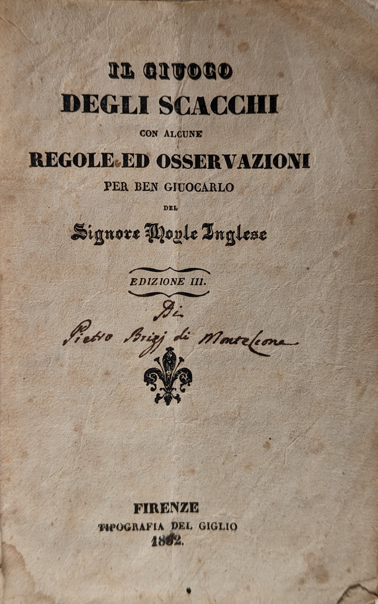

A Descriptive Bibliography of Edmond Hoyle
Copyright © 2014-26 by David Levy
(page updated 2026-03-24)User Guide
Chess.It.3
Il Giuoco degli Scacchi, Tipografia Del Giglio, edizione III, 1832.
 |
Title: | IL GIUOCO | DEGLI SCACCHI | CON ALCUNE | REGOLE ED OSSERVAZIONI | PER BEN GIUOCARLO | DEL | Signore Hoyle Inglese | [short rule] | EDIZIONE III. | [short rule] | [tailpiece] | FIRENZE | TIPOGRRAFIA DEL GIGLIO | 1832. |
| Collation: | 12o: [A]12 [unsigned]; 12 leaves, pp. [1–2] 3 [4] 5–24 |
| Contents: | Signature (Page) Reference | Contents | Signature (Page) Reference | Running Titles |
| A1r (1) | title | |||
| A1v (2) | blank | |||
| A2r (3) | ‘AI DILETTANTI | DEL GIUOCO | DEGLI SCACCHI | [...]’ | |||
| A2v (4) | blank | |||
| A3r–A12v (5–24) | ‘REGOLE | ED OSSERVAZIONI | PER BEN GIUOCARE | A SCACCHI | [...]’ |
| Publisher: | Tipografia Del Giglio |
| References: | Rather S |
| Copies Seen: | OCl [789I J2H]; PPL [62280.D.3]; Levy [2143] |
| Other Copies: | FLB [SEDE Misc.716 .17]; HAG [KW 364 E 74] (Google); ICR [Fiskesafn 794.1 Hoy]; NN [MZE p.v. 17, no. 3]; ViU [XX(1862271.1)] |